This purpose of this repo is to record some tricks and solutions during the process of the ds-cluster building.
Catalogue
- Catalogue
- Main DS Service Composition
- Important Glossary
- Build a Cluster
- Problem And Solution
- Reference
Main DS Service Composition
DolphinScheduler mainly consists of five services:
- MasterServer：Mainly responsible for DAG segmentation and task status monitoring
- WorkerServer/LoggerServer：Mainly responsible for the submission, execution and update of task status. LoggerServer is used for Rest Api to view logs through RPC
- ApiServer：Provides the Rest Api service for the UI to call
- AlertServer：Provide alarm service
- UI: Front page display
Important Glossary
- Priority: Support the priority of process instances and task instances, if the priority of process instances and task instances is not set, the default is first-in-first-out.
- Task/Process Priority: When the number of worker/process threads is insufficient, high-level tasks will be executed first in the execution queue, and tasks/process with the same priority will be executed in the order of first in, first out.
- Failure Strategy: notification strategy, process priority, worker group, notification group, recipient, and CC are the same as workflow running parameters.
- SubProcess: The sub-process node is to execute a certain external workflow definition as a task node.
Build a Cluster
Configuration Information
1. Test Servers Info
- backend-pulsar-101
- backend-pulsar-102
- backend-pulsar-103
2. zookeeper
version：3.7.1
- leader: backend-pulsar-102
- follower: backend-pulsar-101, backend-pulsar-103
3. mysql
version：8.0
Depoy on the docker on the backend-pulsar-101 server.
Due to ds meta data are stored in the database, it’s recommended that the mysql database should be built in the cluster server or the server which owns the low latency to the ds cluster. Otherwise, the io, ui and so on of ds cluster will be badly affected.
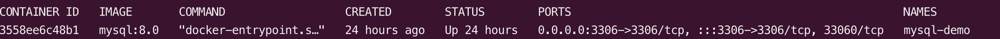
4. dolphin scheduler project
ds version: 2.0.5
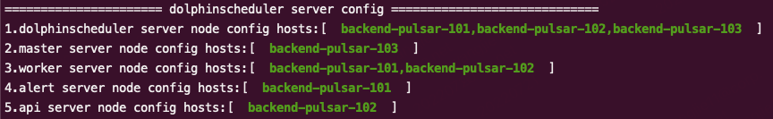
5. others
configuration:
1 | The directory to install DolphinScheduler for all machine we config above. It will automatically be created by `install.sh` script if not exists. |
aso-alert project deployment test
- worker group
DS is allowed to divide workers to organize as work group, and appoint related task executed on specific group.
User need to configure the required environment (such as JAVA_HOME, PYTHON_HOME and so on) in the group to support the program.
- environment manage
I used pyenv and virtualenv to install the python3.9.4, and ds allow user to export environment variables configs in ui, as shown in following pic.
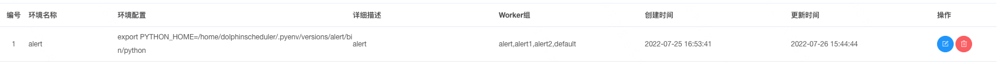
- resources
To run alert project, related resources need to be uploaded. Resources -> upload.
Attention:
- DS 2.0.5 only support upload file level resources and batch upload method is not allowed currently.
Also, if user selects local-storage method for resource, only upoload resource on ui or api are valid,copying file to the target server folder will not map to the meta database.- There is a bug in DS 2.0.5 that process cannot find the resource, which may be caused by server saving the upload resources in the error local storage path.
Please check it in the server or reupload the resource.
Server：
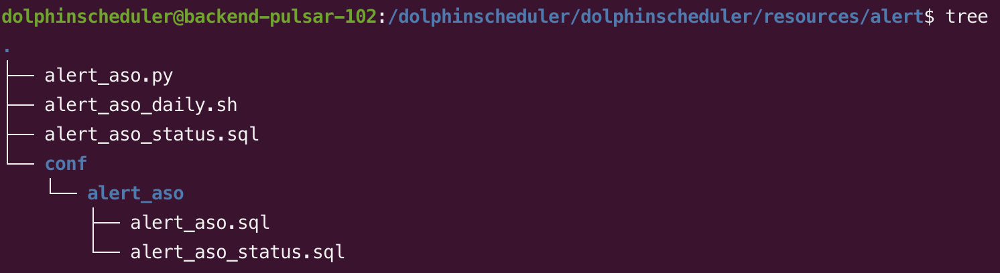
ui：
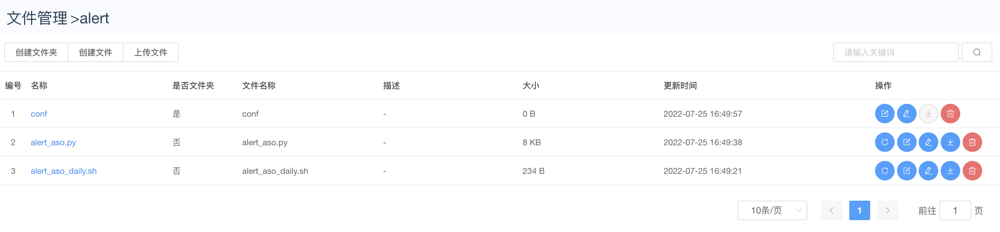
DAG
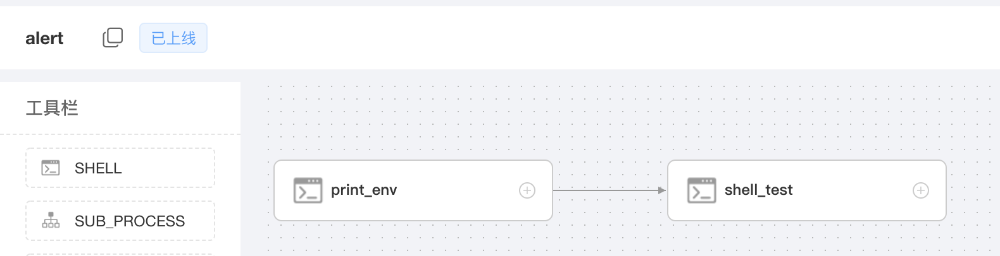
Task
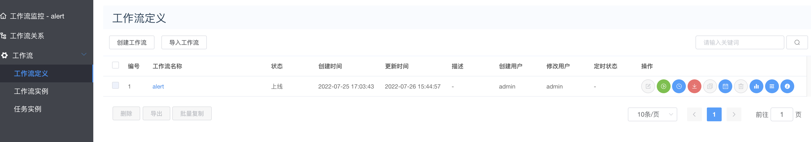
Log
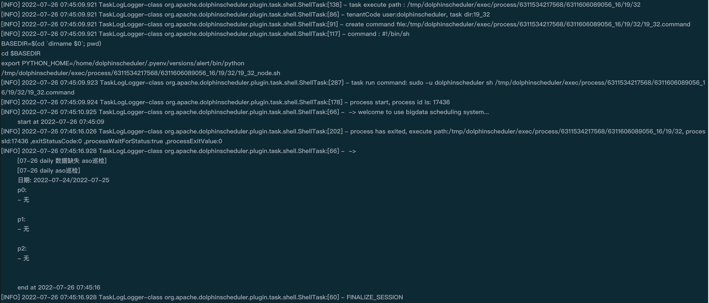
Problem And Solution
1. Telant dosen’t exist
Cause：In meta database, table t_ds_user’s tenant_id dosen’t match t_ds_tenant’s id, which cause the telant dosen’t exist.
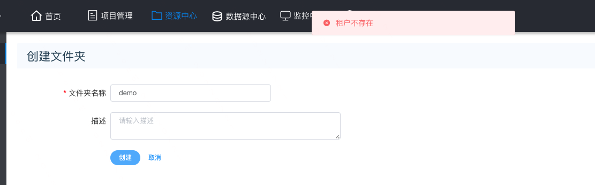
Solution：
update the tenant_id to match the with id.
1 | # check data of tables t_ds_tenant and t_ds_user. |
As shown following, tenant_id didn’t match ID, update tenant_id.
1 | update t_ds_user set tenant_id=[] where user_name=[]; |
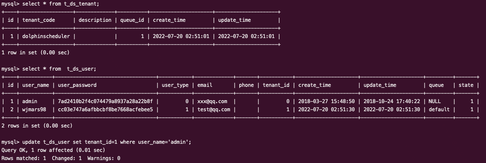
2. Datasource fail to connect mysql
Cause：The license of mysql jdbc connector is not compatible with apache v2 license, so it can’t be included by docker image.
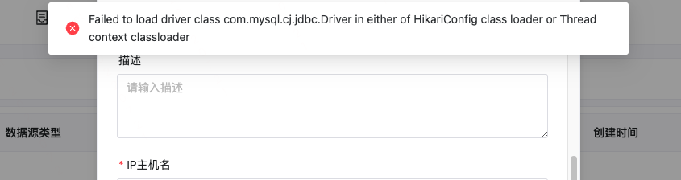
Dolphinscheduler acquiescently appoint PostgreSQL as meta database, so mysql driven should be added to connect mysql database.
Solution：
(Pseudo) cluster
add jdbc driven
1
2
3
4
5
6
7
8
9
10mkdir tmp && cd tmp
wget https://downloads.mysql.com/archives/get/p/3/file/mysql-connector-java-8.0.16.tar.gz
tar -zxvf mysql-connector-java-8.0.16.tar.gz
cd mysql-connector-java-8.0.16
ds version 2.0.*
cp mysql-connector-java-8.0.16.jar /path/to/apache-dolphinscheduler-2.0.*-bin/lib
ds version 3.0.*
cp mysql-connector-java-8.0.16.jar /path/to/apache-dolphinscheduler-3.0.*-bin/tools/libsinit meta database
grant the privilege of dolphinscheduler database to appointed user.
mysql 5.6 / 5.7
1 | mysql -uroot -p |
mysql 8
1 | mysql -uroot -p |
- update dolphinscheduler_env.sh
1
2
3
4
5
6
7
8修改ds环境配置，修改指定数据库为mysql，以及元数据库
export DATABASE=${DATABASE:-mysql}
export SPRING_PROFILES_ACTIVE=${DATABASE}
SPRING_DATASOURCE_URL EXAMPLE:
export SPRING_DATASOURCE_URL="jdbc:mysql://127.0.0.1:3306/dolphinscheduler?useUnicode=true&characterEncoding=UTF-8&useSSL=false"
export SPRING_DATASOURCE_URL="jdbc:mysql://[ip]:[port]/dolphinscheduler?useUnicode=true&characterEncoding=UTF-8&useSSL=false"
export SPRING_DATASOURCE_USERNAME={user}
export SPRING_DATASOURCE_PASSWORD={password} - init database
1
2
3
4
5
6
7
8cd /path/to/dolphinscheduler
ds version 2.0.*
sh script/create-dolphinscheduler.sh
ds version 3.0.*
sh tools/bin/upgrade-schema.sh
Docker，K8s
Docker:
Docker: How to replace Database as MySQL to DolphinScheduler meta database?
K8s:
K8s: How to replace Database as MySQL to DolphinScheduler meta database?
3. Storage Not Enabled
Cause：Currently, ETL selects local file storage, which needs to be configured correctly in the DS environment, otherwise the “storage not enabled” problem will occur.
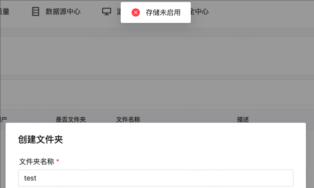
Solution:
1. K8s:
update values.yaml as follow:
1 | common: |
The values of storageClassName and storage depend on actual value.
Attention: storageClassName must support access mode: ReadWriteMany.
2. Cluster
修改 /path/to/ds/conf/config/install_config.conf
1 | resource storage type: HDFS, S3, NONE |
make sure that user owns the right to access the folder
4. work group default have not received the heartbeat
Cause：In multi-NIC environment, zookeeper, dolphinscheduler, /etc/hosts and so on should be config correctly.
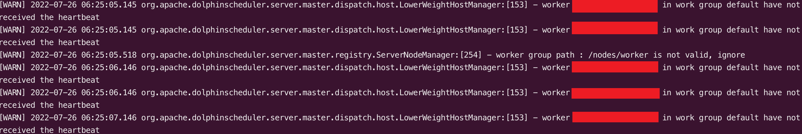
Solution:
ipconfig -a: check NIC
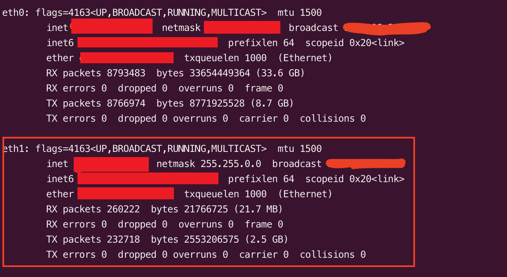
cat /etc/hosts: ip map
1
2
3
4
5
6-- backend-pulsar-101
-- backend-pulsar-102
-- backend-pulsar-103
-- backend-pulsar-101
-- backend-pulsar-102
-- backend-pulsar-103conf/common.properties: dolphinscheduler register ip in zookeeper
1
2
3
4
5network interface preferred like eth0, default: empty
dolphin.scheduler.network.interface.preferred=eth1
network IP gets priority, default: inner outer
dolphin.scheduler.network.priority.strategy=outer